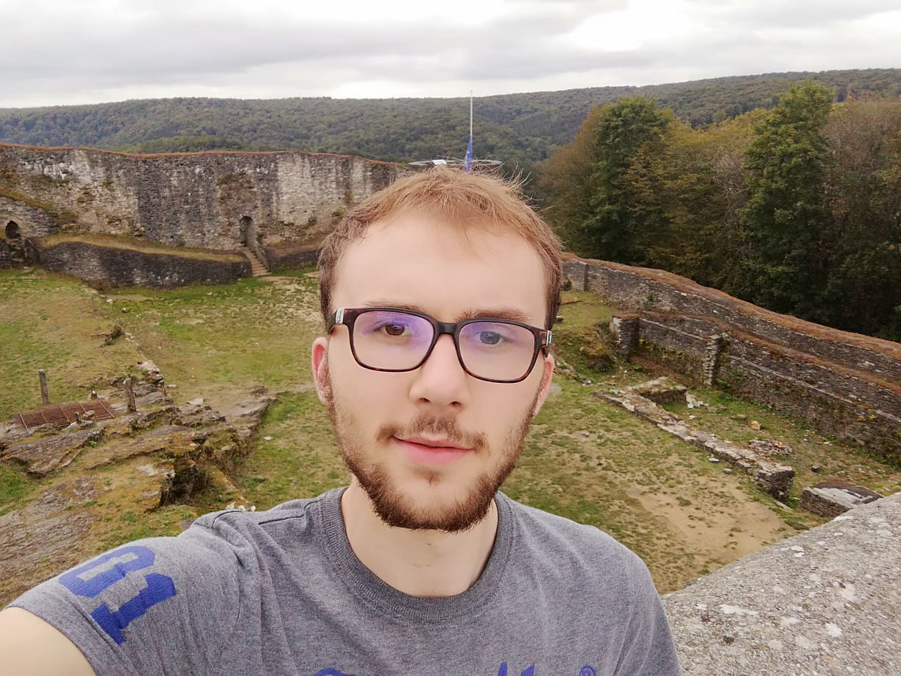

My curriculum vitae
Mattijs Step
 De Lanteernstraat 17 8870 Kachtem 0471 12 57 65 Mattijs.step@hotmail.be https://www.linkedin.com/in/mattijsstep/14 oktober 1999
Opleiding
- 2017 – heden: 3e jaar Toegepaste Informatica Keuzetraject Computer & Cyber Crime Professional Howest Brugge Station
- 2013 – 2017: Secundair onderwijs Wetenschappen Wiskunde met 8 uur wiskunde Prizma Campus College te Izegem Diploma behaald
Vaardigheden
-
Languages
- Dutch 5/5
- French 3/5
- English 4/5
- German 1/5
-
Computer skills
- HTML 4/5
- CSS 4/5
- Javascript 4/5
- SQL 4/5
- Java 4/5
- PHP 3/5
- Git 4/5
- Python 2/5
- C# 3/5
- Network 3/5
- Penetesting 2/5
- Microsoft 3/5
Ervaring
- Zomer 2019: Vakantiejob bij Benoit Security Vernieuwen van commerciële dossiers
- Februari 2019: Internationaal Project in Indië via Howest Werken in een multidisciplinair en multicultureel team
- Zomer 2018: Vakantiejob bij Somko Meewerken aan verschillende IT-projecten
- Zomer 2017: Vakantiejob bij Antoon Decock Op punt zetten voorraad
Hobby's
- Schaken
- Gaming